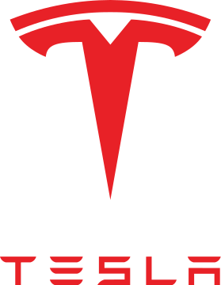
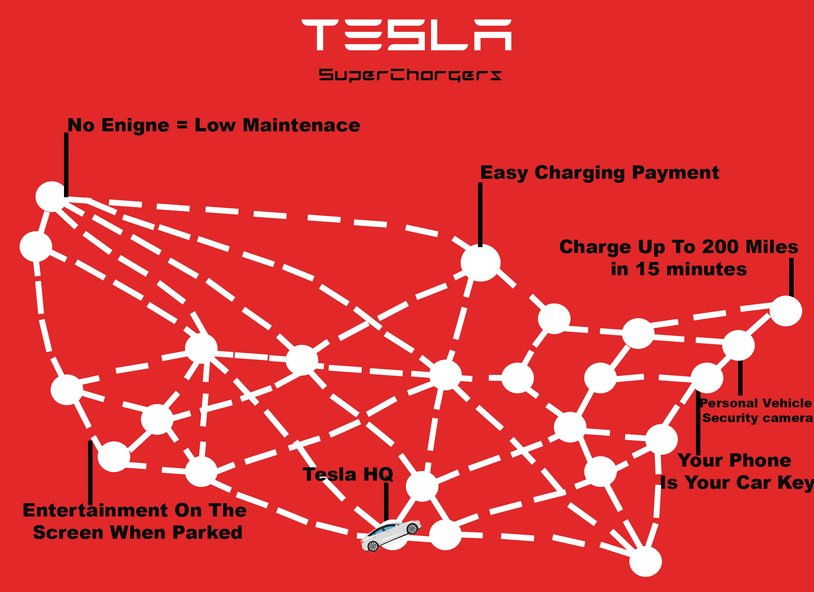

The first project is about trying to be hired at Tesla for a Software Position, as well as showing my resume. In this memo, I gave my reasons why I am the perfect candidate for the position.
One of the ways I was able to show that in the memo was how I aligned them with their values.
Tesla is determined to have sustainable energy, as well as being the future of self-driving cars. I am also determined that I would look to the future, as well as I bought their car to show I believe in what they are
doing.

This project was about creating an infographic for the company for which you were hired in project two. In this project, I did an infographic about the Tesla Superchargers for new customers. I wanted to show new
customers how well-connected the Superchargers are across the country and how widespread the Superchargers are, which can get rid of range anxiety for customers who want to have road trips. I also give small
facts about the car and the superchargers so the customer can understand more about the vehicle and how it operates.
This project was about creating a manual. The manual that I chose to create was about the fundamentals of programming. I want to give a sense of how important the fundamentals are as we professionals might
forget that and that could decrease our performance. Creating a manual for a programmer was hard as a there is not a right way to start or to end of our work. In the manual I suggest to test the code frequently as
there is a higher possible chance to fix a bug immediate instead of trying to figure with function or which code is not working.
This project was about creating a proprosal that would improve the company. My proprosal was about advancing the battery technology. Even though at the begining, Tesla so adhead of the competition almost no other car company was able to compete with Tesla.
Unitl now, Chinese car companies are not only catching up but are also beating Tesla with the technology. One way of trying to complete with the Chinese car companies is research into different kinds of element would improve the battery's life and range.
Also, we would get professional research and we would university to help out with research.
This semester has been a lot of writing for me, and even though it was a lot of writing, there is still one thing that sticks with me throughout the semester. Early in the semester, Dr. Barret-Fox told us
that one of the mistakes that younger writers would make is giving too many sources in their writing. Him saying that was odd to me because throughout my high school career, my teacher would teach us that the
more sources we have, the better our argument would be. Dr. Barret-Fox shows us that if we present ourselves that we know about the topic, then it is not necessary to have so many sources.
Social Media:
Blogging:
In the project, I found a good blog to take inspiration from, Smore Science Magazine, and based on their blog, I found strengths and weaknesses that helped me
create my blog that talks about the future of blogs. I talk about how blogs are still everywhere where even though they might not be the same as we used to think of
and how important it is to understand what make a good blog and use that in many other forms of media.
In the second project, I created a pilot episode of a podcast talking about the history of AI and what will come in the future. I talk about how the AI has been we
us for a long time, but only recently has it become powerful. The goal of the podcast was to make sure people understood that AI has been with us for a long time and
what to expect from it.
In the third project, I did a vodcast episode. In that episode, I looked at my gameplay in Rocket League and gave criticism on improving
myself, but also other players too who want to get better at the game. I show a couple of clips of the mistake that I made during the game,
and in the video, I explain why I should not have made that mistake, why it happened, and the ways I should have played differently. vodcast
In the final project, I worked on a business that needed help with its social media. I created a social media plan that would help them get
more engagement, more followers, and more people to their business. One way I did it was I looked at one business that was similar to them
on the same level and how they use that to make their social media more interactive for their customer. A couple of things I did were expand
on their social media accounts for a bigger audience, create themed posts, and have a call to action.
What most people think when someone says that they are an influencer they would probably think that the work is easy, but in reality,
the work takes a long time. Some people would think that you just sit on a screen a do nothing when the process of creating content takes a
long time because not you have to focus on planning the content, you have to also have to consider your audience. This portfolio is expected
in my career, so having more skills in communication, video, and planning in my portfolio would show my employer that I can put myself into the
audience’s shoes and explore what they would want and what they do not want. As I am working on more projects throughout my career, my
portfolio would showcase the many skills that would have and not only that but also in case I forget how do to someone I can look back on my
portfolio to see what I did that helped or fix the problem and use it to my current project that I am working on. So next time someone tells
me that working on social media is easy will show them my portfolio and tell them the problems that I encounter, the solutions that I fix,
and my thought process on why I choose one method instill using another.
 This project was about creating a manual. The manual that I chose to create was about the fundamentals of programming. I want to give a sense of how important the fundamentals are as we professionals might
forget that and that could decrease our performance. Creating a manual for a programmer was hard as a there is not a right way to start or to end of our work. In the manual I suggest to test the code frequently as
there is a higher possible chance to fix a bug immediate instead of trying to figure with function or which code is not working.
This project was about creating a manual. The manual that I chose to create was about the fundamentals of programming. I want to give a sense of how important the fundamentals are as we professionals might
forget that and that could decrease our performance. Creating a manual for a programmer was hard as a there is not a right way to start or to end of our work. In the manual I suggest to test the code frequently as
there is a higher possible chance to fix a bug immediate instead of trying to figure with function or which code is not working.